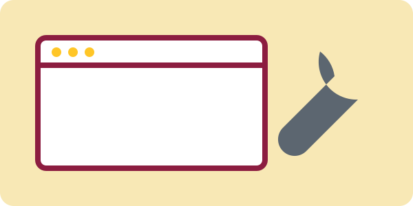

Course and Tool Check
Inspector check: inspect this paragraph and locate its data-check value.
Validator check
Validate the original HTML and CSS, repair the deliberate errors, and validate again.
Responsive-view check
The status phrase changes when the viewport is narrower than 40rem.
